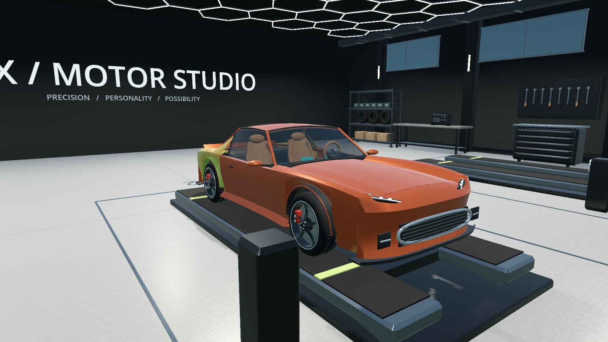
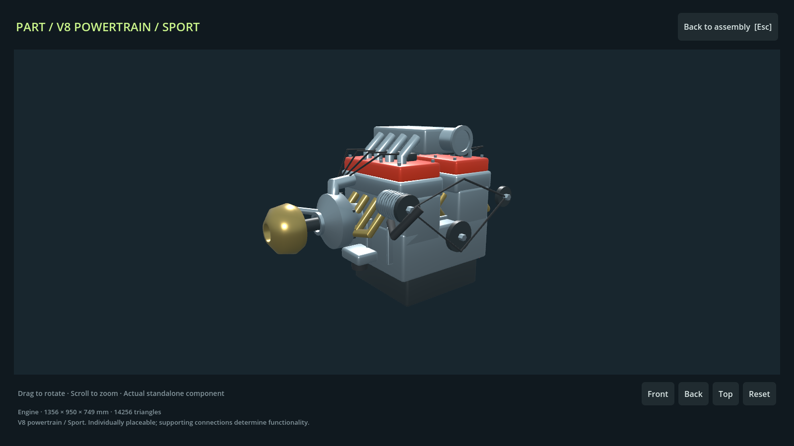
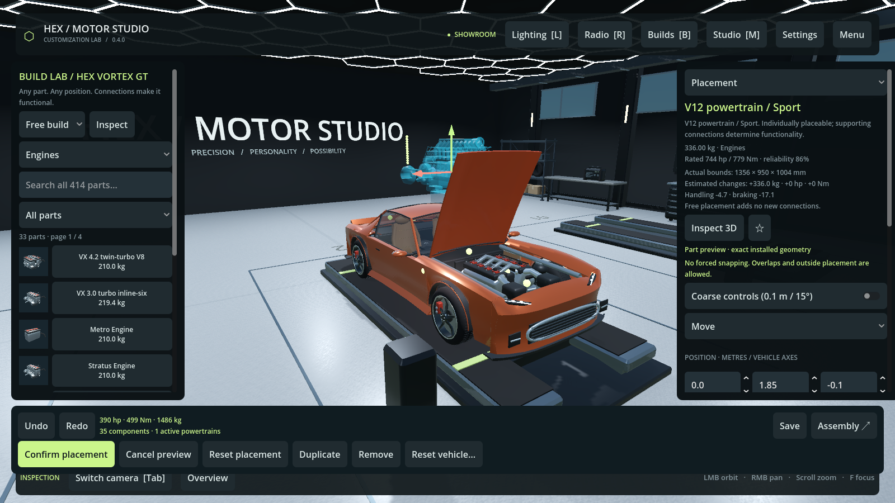

Choose your base.
Browse the rotating showroom. Name your project and place a complete vehicle or bare chassis in a bay.

THE WORKSHOP IS OPEN / CUSTOMIZATION LAB
Six original vehicles. 414 individually placeable parts. One garage built around your next idea.
Standalone game · Intel & Apple Silicon Mac · Windows 64-bit
Start complete.
Or start with a bare chassis.
01 / FIND YOUR NEXT BUILD
A coupe, hatchback, sedan, SUV, pickup and off-roader. Each has its own body, wheelbase and cabin. Build any of them with any part.
Select a vehicle to see its factory build, a customized example and its bare chassis.
02 / GET CLOSER
Open a component on its own. Turn it over, zoom into the hardware and inspect the actual mesh before installing it.

ANY PART / ANY POSITION

Actual game capture. Overlaps and outside placement are allowed after confirmation. The budget is 512 additional components per vehicle.
03 / A GARAGE THAT WORKS
Browse the rotating showroom. Name your project and place a complete vehicle or bare chassis in a bay.
Move and rotate any component freely. Duplicate or replace it, then connect the supporting systems to make it functional.
Save your builds locally. Undo and redo changes, and watch connected powertrains update your vehicle statistics.
04 / LATEST RELEASE
Build outside the boundaries. A roof-mounted turbo is allowed; its intake and exhaust connections determine whether it adds power. Now available for Intel and Apple Silicon Mac, plus Windows 64-bit.
Six vehicle designs are playable. Electric motors and hybrid powertrains are available as components. The remaining planned vehicle designs are still in development.
05 / YOUR BAY IS WAITING
HEX / Motor Studio for Mac and Windows.
LATEST / v0.4.1
Mac: macOS 13+ · Windows: 10/11, 64-bit
After verification, click Save verified ZIP. If an embedded browser cannot save it, open this page in your regular browser. Mac: unzip and open the .app. Windows: extract the entire folder and open HexMotorStudio.exe; keep its .pck beside it. No separate Godot installation is needed. The Mac app is locally signed, not notarized. The Windows build is unsigned and awaits testing on Windows hardware.
Open the extracted app. In Preferences → Game updates, check for releases and download verified updates. On Mac and Windows, installation keeps the old app and saves your open builds. Saved projects live in the game’s local user-data folder. Existing Vortex projects migrate with a recoverable backup.
This is a workshop customization sandbox. Driving and racing are not included.